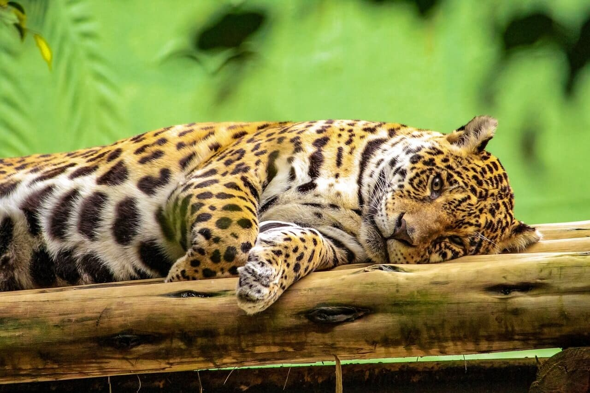

A preocupação com o meio ambiente nunca foi tão relevante quanto nos dias atuais. O planeta enfrenta diversos desafios ambientais, como a mudança climática, a perda de biodiversidade e a escassez de recursos naturais, para enfrentar esses problemas, é necessário que cada um faça a sua parte, e as doações ambientais são uma forma eficaz de contribuir para a preservação do nosso ecossistema.
As doações ambientais desempenham um papel crucial na implementação de projetos e iniciativas que visam proteger o meio ambiente, essas ações podem abranger uma variedade de áreas, desde a conservação de habitats naturais até o apoio a projetos de energia renovável, vejamos algumas das principais ações que podem transformar o mundo:
A conservação de ecossistemas é uma das formas mais efetivas de proteger a biodiversidade e garantir a sustentabilidade do planeta, existem várias organizações dedicadas a preservar habitats naturais, como florestas, oceanos, rios e recifes de coral, essas organizações trabalham para combater a degradação ambiental, restaurar ecossistemas degradados e proteger espécies ameaçadas de extinção.
Para fazer uma doação para a conservação de ecossistemas, você pode acessar o site da Conservation International, uma organização global que tem como objetivo proteger a natureza para as gerações futuras.
O combate às mudanças climáticas é uma das maiores prioridades da atualidade, as emissões de gases de efeito estufa estão causando o aquecimento global e levando a consequências devastadoras, como o aumento do nível do mar, eventos climáticos extremos e alterações nos padrões de precipitação.
Existem organizações dedicadas a reduzir as emissões de gases de efeito estufa e promover a transição para fontes de energia limpa e renovável, uma opção de doação nessa área é o 350.org, uma organização global que trabalha para acabar com o uso de combustíveis fósseis e construir um futuro mais sustentável.
Os oceanos desempenham um papel vital na regulação do clima e na sustentação da vida na Terra, no entanto, a vida marinha está enfrentando ameaças significativas, como a poluição, a pesca excessiva e a acidificação dos oceanos, proteger a vida marinha é essencial para garantir a saúde dos ecossistemas costeiros e o equilíbrio dos oceanos.
Você pode fazer uma doação para a proteção da vida marinha através do site da Sea Shepherd Conservation Society, essa organização atua globalmente na defesa dos oceanos e combate a pesca ilegal e a destruição dos habitats marinhos.
A educação ambiental desempenha um papel fundamental na conscientização e engajamento das pessoas em relação às questões ambientais, promover a educação ambiental é essencial para capacitar as pessoas a tomarem decisões informadas e adotarem práticas sustentáveis em seu dia a dia.
Uma organização que trabalha com educação ambiental é a Earth Day Network, além de coordenar o Dia da Terra, a organização promove programas educacionais para capacitar estudantes e comunidades a se tornarem defensores do meio ambiente.
O desmatamento é uma das principais causas da perda de biodiversidade e contribui para as mudanças climáticas, o reflorestamento e a restauração de ecossistemas desempenham um papel crucial na recuperação de áreas degradadas e na criação de habitats saudáveis para a vida selvagem.
Uma organização que trabalha nessa área é a Eden Reforestation Projects, através de doações, você pode contribuir para o plantio de árvores em regiões devastadas, ajudando a restaurar ecossistemas e combater as mudanças climáticas.
As doações ambientais são uma forma poderosa de contribuir para a proteção e preservação do meio ambiente, com a crescente conscientização sobre os desafios ambientais que enfrentamos, é importante agir e apoiar as organizações e iniciativas que estão fazendo a diferença.
Independentemente da causa que você escolher apoiar, lembre-se de pesquisar e selecionar organizações confiáveis e transparentes, que garantam o uso adequado dos recursos doados, cada doação, por menor que seja, faz a diferença e contribui para um futuro mais sustentável para todos.